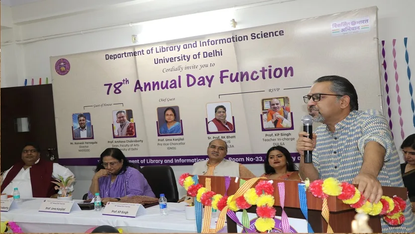

DLIS (Department of Library and Information Science) at Dhaka University (DU) is an academic department in Bangladesh that offers education and research opportunities in the field of library and information science. The department plays a vital role in producing skilled professionals who can manage libraries, information systems, and archives effectively in both public and private sectors.
About Us

Curriculum: The curriculum covers a wide range of topics related to library management, information systems, cataloging, digital libraries, archival science, information retrieval, research methodologies, and more. It combines theoretical learning with practical skills.
Research: The department is involved in research in various areas of library and information science, including digital libraries, information management, library automation, and the role of information in society. Faculty members conduct research and collaborate with other institutions and organizations to advance knowledge in the field.
Facilities: The department is equipped with a library, computer labs, and other resources that help students with their studies and research projects. The faculty also provides practical training to help students gain hands-on experience in library operations.
Career Opportunities: Graduates from DLIS at Dhaka University can pursue careers as librarians, information managers, archivists, records managers, or information professionals in various settings, including libraries, schools, universities, government agencies, businesses, and research institutions.